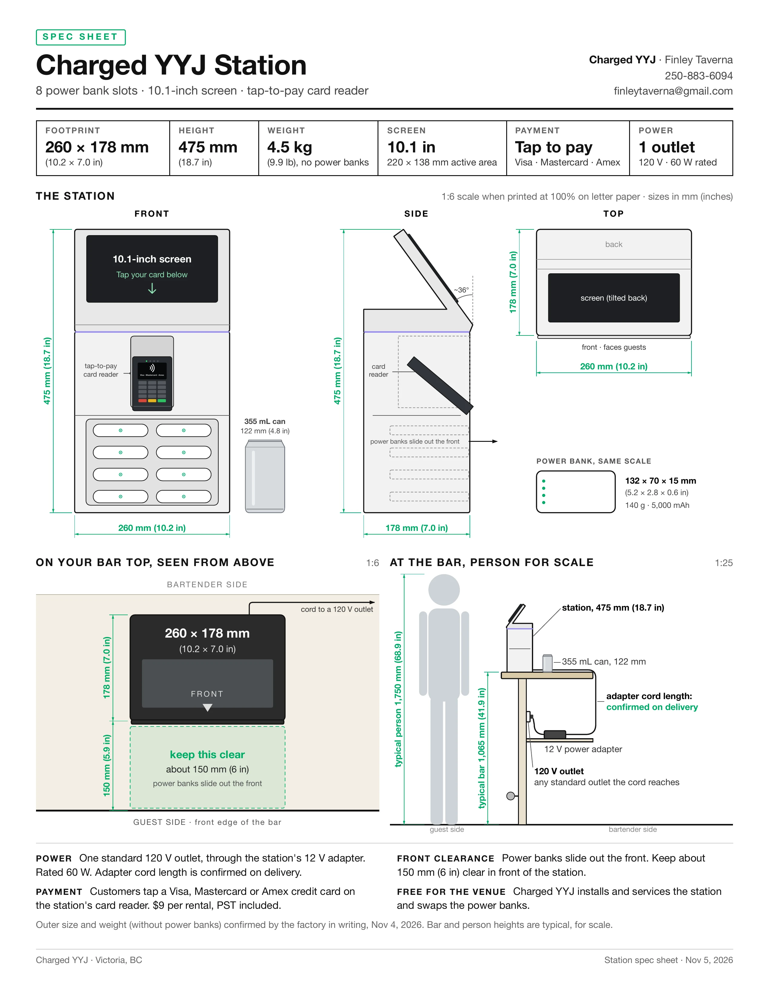
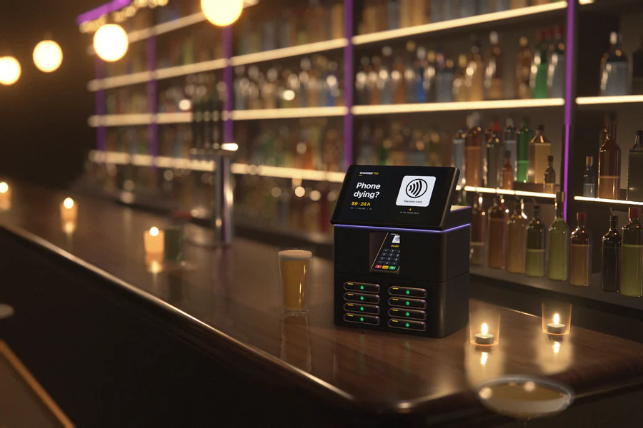
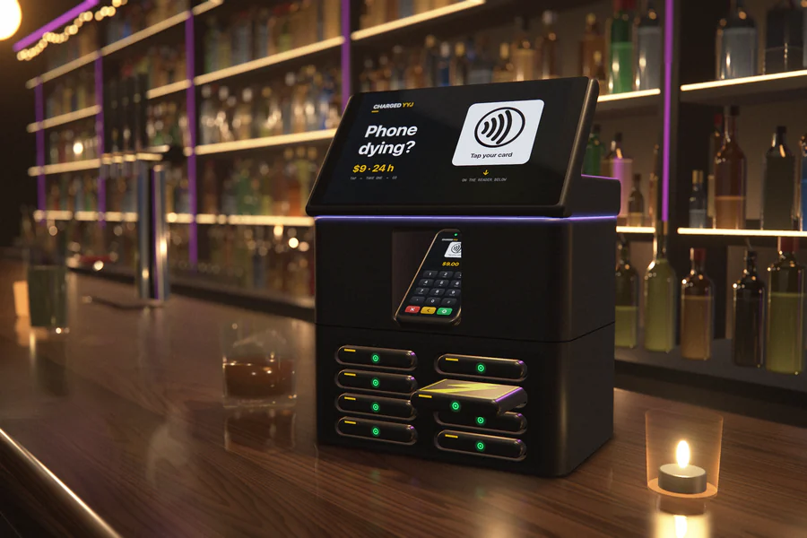
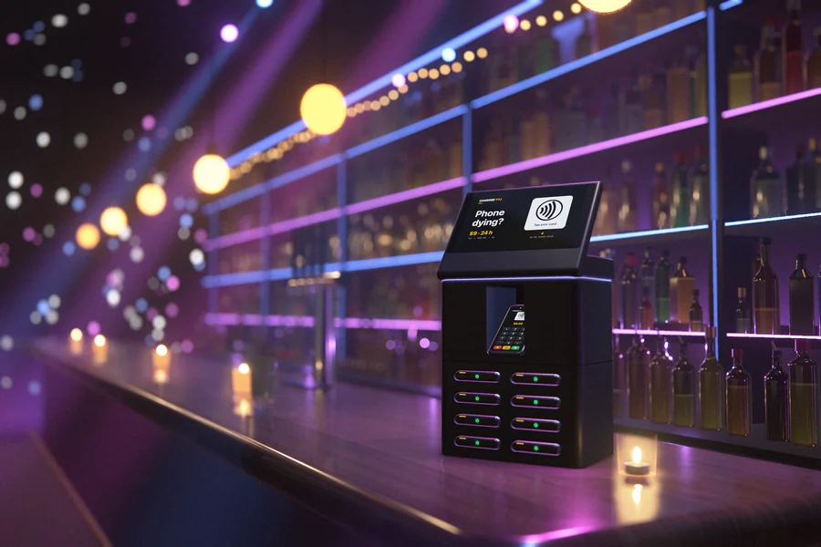

CHARGED YYJ
Phone charging Victoria BC

[power bank rental in victoria]
Charged YYJ is bringing phone charging stations to bars in downtown Victoria, BC, launching December 2026. Tap your credit card on the station, pay $9, and rent a charged power bank, a portable phone charger you take with you. No app, and your phone doesn't need any battery.
About the charging stations[how it works]
- Tap your credit card on the station's reader
- $9, PST included (a $39 hold until you return it)
- Take a charged power bank
- Return it to any Charged YYJ station within 24 hours
[free station for bars]
The station is free for your bar. You get 15% of every $9 rental (before tax), paid monthly. Staff never touch payments or chargers. It needs one regular outlet.
Get a free station for your bar[about charged yyj]
Charged YYJ is a small local business in Victoria, BC, started in 2026 by Finley Taverna. We'll set up every station ourselves and keep it stocked with charged power banks. YYJ is Victoria's airport code, and locals use it for the city. We're not part of the airport, and we charge phones, not cars.
[what we aim to do]
Nobody should have to leave a good night out because their phone died. We want a charged power bank within reach in bars across Victoria, for $9, with nothing extra for bar staff to do.
[more pictures]
Concept renders, not photos: our 3D model of the station on a bar we built in 3D. Real photos will replace them once stations are in bars.


